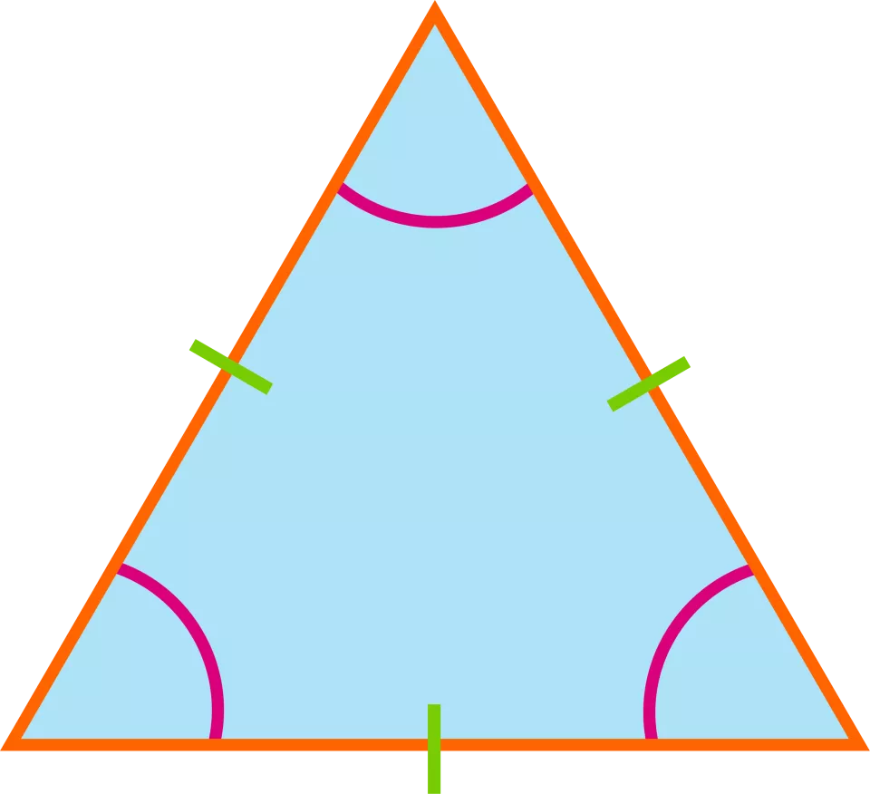

TRIANGLE TRACKER PROJECT
Triangles

A triangle is a polygon with three edges and three vertices. It is one of the basic shapes in geometry.
(three sides and three angles) and the three angles always add to 180° the figure above shows an example
of a triangle with sides lebled with green marks and the angles in pink semi-circles that joins two vertices.
Types of triangles
- isosceles
- equilateral
- scalene
- isosceles
- - For an isosceles triangle, two sides are exactly equal.
Also, has two angles of the same measure, namely the angles opposite
to the two sides of the same length. he equal sides are called legs and
the third side is called the base.
- equilateral
- -or an equilateral triangle, all sides must be equal.
It's also a regular polygon with all angles measuring 60°.
- scalene
- For a scalene triangle, none of the sides is equal. However, the sum of
any two sides of the triangle must be greater than the third side.
Equivalently, it has all angles of different measure.
our projects determines if the values input by the user are of shape tringle
and the which type of triangle they form.